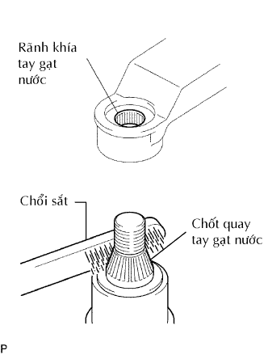

KÍNH CỬA HẬU > LẮP |
| 1. LẮP KẸP VÀ ĐỆM KÍNH CỬA HẬU |
Bôi sơn lót G lên phần lắp các kẹp.
Lắp 3 đệm mới và 2 kẹp mới vào kính như trên hình vẽ.
| 2. LẮP KEO DÍNH KÍNH CỬA HẬU |
Bôi sơn lót G lên kính ở đó có lắp đệm kính.
| Vùng | Điều kiện tiêu chuẩn |
| a | 10.0 mm (0.394 in.) |
Bóc dây ra khỏi phần dính của đệm kính. Lắp đệm kính (phía keo) vào kính (Vùng G) như được chỉ ra trong hình vẽ.
| Vùng | Điều kiện tiêu chuẩn |
| a | 3.2 mm (0.126 in.) |
| b | 11.2 mm (0.441 in.) |
| 3. LẮP GIOĂNG CỬA HẬU |
| 4. LẮP KÍNH CỬA HẬU |
 |
Dùng chổi hoặc miếng mút, bôi sơn lót M lên phần lộ ra của thân xe.
Dùng chổi hoặc miếng mút, bôi sơn lót G lên mặt tiếp xúc của kính cửa hậu.
| Vùng | Điều kiện tiêu chuẩn |
| a | 14.0 mm (0.551 in.) |
| b | 16.2 mm (0.638 in.) |
| c | 8.0 mm (0.315 in.) |
Hãy bôi keo vào kính cửa hậu.
Cắt đầu của vòi keo như được chỉ ra trên hình vẽ.
| Nhiệt độ | Khung thời gian sử dụng |
| 35°C (95°F) | 15 phút |
| 20°C (68°F) | 1 giờ 40 phút |
| 5°C (41°F) | 8 giờ |
Lắp ống keo lên súng bắn keo.
Bôi keo lên kính cửa hậu như chỉ ra trong hình vẽ.
| Vùng | Điều kiện tiêu chuẩn |
| a | 12.0 mm (0.472 in.) |
| b | 8.0 mm (0.315 in.) |
| c | 14.0 mm (0.551 in.) |
| d | 16.2 mm (0.638 in.) |
Lắp kính cửa hậu vào thân xe.
Giữ kính cửa hậu chắc tại vị trí bằng băng dính hay tương đương cho đến khi keo đã đông cứng.
Eùp nhẹ mặt trước của kính cửa hậu để đảm bảo rằng cửa hậu đã được lắp chắc chắn lên thân xe.
w/ Bộ sấy kính hậu:
Nối 2 giắc nối của bộ sấy kính hậu.
Dùng dao, cạo bóc keo lồi thừa.
| Nhiệt độ | Thời gian tối thiểu trước khi lái xe |
| 35°C (95°F) | 1 giờ 30 phút |
| 20°C (68°F) | 5 giờ |
| 5°C (41°F) | 24 giờ |
| 5. LẮP CỤM TẤM ỐP TRANG TRÍ CỬA HẬU |
 |
Lắp tấm ốp và cài khớp 16 kẹp.
| 6. LẮP RAY NẸP KÍNH CỬA HẬU BÊN TRÁI |
 |
Lau sạch mặt tiếp xúc của cửa bằng xăng trắng.
Dùng đèn sấy, sấy ray nẹp.
| Hạng mục | Điều kiện tiêu chuẩn |
| Ray nẹp | 20 đến 30°C (68 đến 86°F) |
Dùng đèn sấy, sấy tấm cửa.
| Hạng mục | Điều kiện tiêu chuẩn |
| Tấm cửa xe | 40 đến 60°C (104 đến 140°F) |
Tháo giấy ra khỏi bề mặt ray nẹp.
Lắp rãnh.
Lắp 2 vít.
| 7. LẮP RAY NẸP KÍNH CỬA HẬU BÊN PHẢI |
| 8. LẮP CỤM ĐÈN PHANH Ở GIỮA (w/ Đèn phanh ở giữa) |
Lắp giắc nối.
Lắp đèn phanh bằng 2 vít.
| 9. LẮP CỤM ĐÈN PHANH Ở GIỮA (w/ Đèn phanh ở giữa) |
| 10. LẮP CỤM TAY GẠT NƯỚC PHÍA SAU (w/ Gạt nước phía sau) |
Dừng môtơ gạt nước ở ở vị trí ngừng tự động.
|  |
Lau rãnh khía của tay gạt nước với dũa tròn hay tương được.
Lau rãnh khía của chốt quay tay gạt nước với dũa tròn hay tương đương.
 |
Lắp tay và lưỡi gạt bằng đai ốc. Chắc chắn rằng tay và lưỡi gạt đến vị trí như trong hình vẽ.
Hoạt động gạt mưa sau trong khi phun nước lên kính.
Chắc chắn rằng không có va chạm giữa lưỡi gạt và trụ.
| 11. KIỂM TRA RÒ RỈ VÀ SỬA CHỮA |
Tiến hành thử rò rỉ sau khi keo làm kín đã đông cứng hoàn toàn.
Hàn bất cứ chỗ hở nào bằng keo kính.
| 12. NỐI CÁP VÀO CỰC ÂM ẮC QUY |